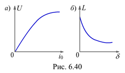

6.4.3.3. Применение катушки со сталью при синусоидальном напряжении питания
Катушки с ферромагнитным магнитопроводом, специально предназначенные для создания постоянной или изменяемой индуктивности, называются дросселями. Дроссели применяют в цепях переменного тока для регулирования тока. Использование для этой цели резистора экономически невыгодно из-за увеличения мощности потерь (RI02). В дросселях мощность потерь в проводах обмотки и в магнитопроводе незначительна, а сравнительно большая индуктивность позволяет эффективно ограничивать или регулировать ток в цепи. Примером регулируемой индуктивности при помощи изменяемого воздушного зазора может служить дроссель, включаемый для регулирования сварочного тока в электрическую цепь сварочного трансформатора.
Путём измерений или расчёта магнитной цепи может быть построена вольт-амперная характеристика U(I0) катушки c зазором в магнитопроводе (рис. 6.40, а). При увеличении синусоидального напряжения на зажимах катушки должен увеличиваться её магнитный поток. При насыщении сердечника ток катушки будет возрастать быстрее, чем магнитный поток и напряжение.
В тех случаях, когда магнитопровод не насыщен, магнитное сопротивление воздушного зазора RMd = d/m0S (несмотря на малую величину зазора) оказывается значительно больше магнитного сопротивления RM1 = lM/mm0S ферромагнитной части магнитопровода. Это позволяет пренебречь величиной RМ1. Тогда выражение индуктивности цепи примет вид:
L = w2m0S /(d + lM/m) » w2m0S/d. |
(6.20) |
|---|
Выражение (6.20) позволяет сделать следующие выводы:
1) при увеличении воздушного зазора индуктивность L (см. рис. 6.40, б) и индуктивное сопротивление ХL = wL катушки уменьшаются, вследствие чего при неизменном действующем на зажимах катушки переменном напряжении ток дросселя возрастает;
2) регулируя величину воздушного зазора в магнитопроводе, можно установить нужное значение переменного тока в индуктивной катушке при неизменном значении подводимого к дросселю напряжения.